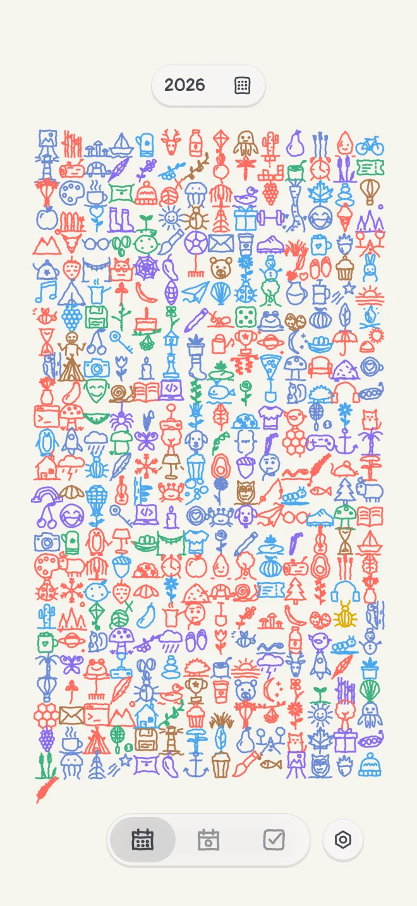
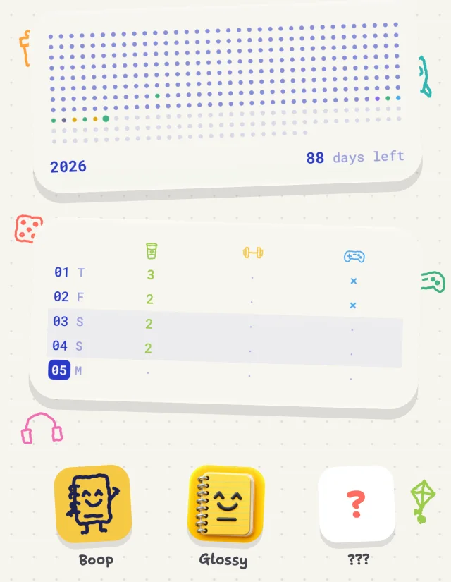

Keep going, and someone moves in.
Write three days in a row and an ink-blot ninja turns up in the margins. Others follow, each with a page of field notes and an app icon of their own. Nobody says who’s next.
Boop is a diary for iPhone. Write a few lines, add a photo or a sketch, check off your habits, and every day becomes a small drawing on one page of your year.



Write what happened, pick a mood, drop in photos and trace a sketch over any of them. Boop draws the day a doodle of its own.

Give each habit a color. Do it, and the day’s doodle takes it on, so the year shows at a glance what you kept up.

Write three days in a row and an ink-blot ninja turns up in the margins. Others follow, each with a page of field notes and an app icon of their own. Nobody says who’s next.
Each for something you did.
The year in dots, this month, today’s photos and your habits for the week.

Light or dark, your own background and ink, three fonts and four kinds of paper.

Your diary stays on your phone, with a copy in your own iCloud if you want one.
No ads. Boop sends anonymous usage statistics and crash reports to get better, never your entries or photos, and one switch in Settings turns that off. Read the privacy policy.
The diary, the doodles, the habits and the inhabitants are free. Boop Plus is a subscription or a one-time purchase for the rest.
One line today is enough. The doodle takes care of the rest.
Download on theApp Store